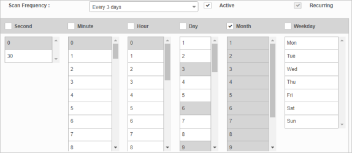
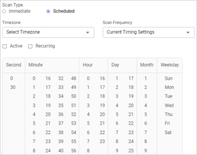

Scan Frequency
Use this function to set the details for a scan, such as frequency, status, and occurrence.
| The Scan Frequency window displays in different layout configurations throughout the application; however, the functionality remains the same across the application. |
| 1. | In the navigation pane, select Discovery Scans > Scheduled Scans. The window displays a list of all currently scheduled scans. |
| 2. | Select a scheduled scan for which the frequency should be modified. The Detail window displays. |
| 3. | Do any of the following: |
| 4. | When all selections/entries are made, click Update. |
Scan Frequency Fields
| Field | Description |
|---|---|
|
Client |
Indicates the client to which the scan applies. |
| Scan Frequency |
The time interval at which the scan runs. When a predefined time is selected from the drop-down list, the timetable columns update accordingly. For example, if the Scan Frequency is every 3 days, the selections and shading in the table automatically adjust.

 |
|
Is Active |
Indicates if the scan is active. When unchecked, the scan does not run. |
|
Is Recurring |
Specifies if the scan should be repeated at the predefined time. If unchecked, the scan will run one time once the frequency setting is reached. |
Related Topics